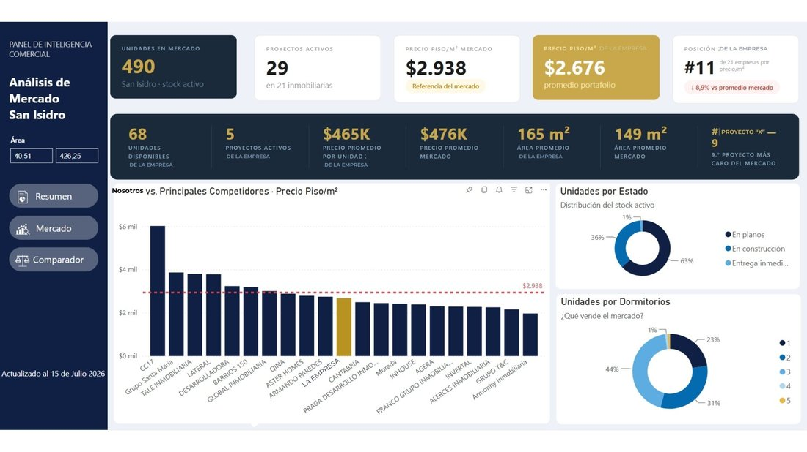
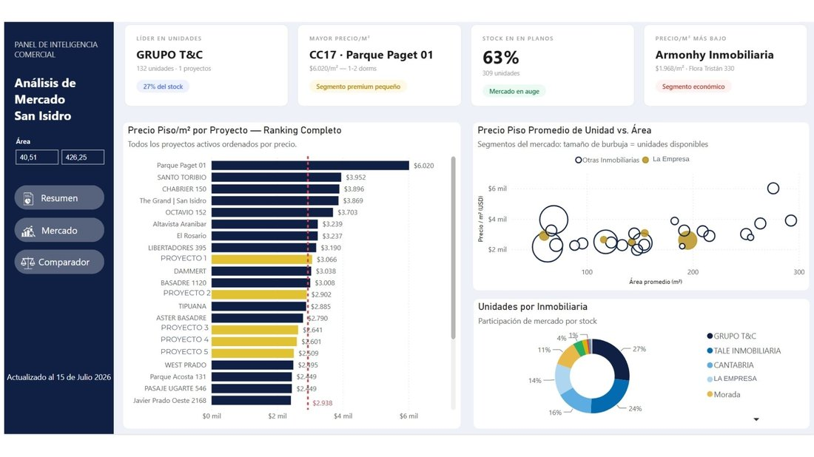
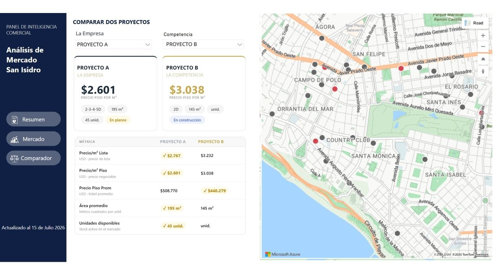

An automated pipeline that turns listings scraped from three real estate platforms into a monthly-updated Excel dataset, connected to a Power BI dashboard for ongoing market and competitor analysis.
Competitor information was distributed across multiple real estate platforms, making market analysis manual, fragmented and difficult to maintain. The goal was a structured, repeatable way to turn that into insights for pricing, inventory and competitive positioning.
I built an automated scraping process that collects listing data from three platforms into a single Excel file — removing duplicates and aligning fields. That file connects to Power BI once, then refreshes with a new extraction every month, so the dashboard stays current instead of being a one-off report.
Nexo · Urbania · Babilonia
Automated data collection
Clean, deduplicated & aligned
New extraction feeds the same file
Market intelligence
The dashboard lets the commercial team move between competitor pricing, price per m², available stock and its evolution over time, and market positioning — comparing each project against direct competitors and tracking monthly sales estimates instead of reading static reports.

Market overview — stock, active projects, price per m² vs. the market, and portfolio positioning at a glance.

Full competitor ranking by price per m², plus price vs. unit size and market share by developer.

Side-by-side project comparator against a chosen competitor, with a map of nearby listings.
Supporting faster, data-driven decisions across pricing, positioning and competitive strategy.